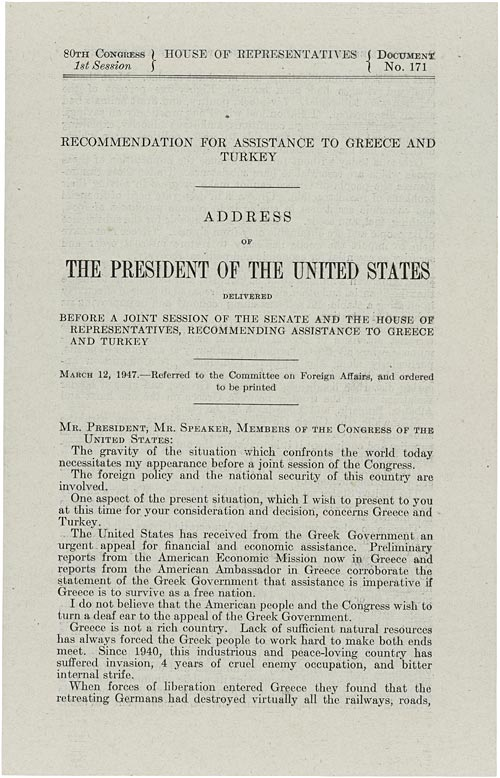

U.S. FOREIGN POLICY / WEEK 08
The beginning of the Cold War
- 1945–1952
- Dr. Murat Toman
U.S. FOREIGN POLICY / WEEK 08
The main idea
- Containment aimed to limit the spread of Soviet or communist influence. Economic aid, alliances, military forces, and new institutions became parts of a growing U.S. security role.
- Conflicts described as part of a global rivalry also involved local histories and interests. Partners, governments, and movements could seek U.S. support for their own purposes. Applying the same explanation everywhere hides those differences. Containment changed across regions and over time.
U.S. FOREIGN POLICY / WEEK 08
Where this week fits in history
| When | Selected event |
|---|---|
| 1941 | Four Freedoms and entry into World War II |
| 1947 | Truman Doctrine |
| 1956 | Suez crisis |
U.S. FOREIGN POLICY / WEEK 08
History through a source

- This document is evidence of an official statement or decision. Its wording and appearance help us identify the source, but its promises still need to be checked against evidence of actions and results.
- Use the linked transcription or PDF to read the text. Ask who issued it, what it claims, and whose viewpoint is missing.
U.S. FOREIGN POLICY / WEEK 08
Key words explained
- Cold War: A prolonged rivalry between the United States and Soviet Union and their partners, including conflicts beyond direct war between the two superpowers.
- Containment: Policies intended to limit the expansion of Soviet or communist influence.
U.S. FOREIGN POLICY / WEEK 08
Key words explained
- Aid: Resources provided to another country or population.
- National security state: Government institutions and practices organized around sustained security commitments.
U.S. FOREIGN POLICY / WEEK 08
Wartime cooperation gave way to rivalry
- The end of World War II left disagreements over security and political control. The United States and Soviet Union had fought a shared enemy, but their interests did not become identical.
- The early Cold War emerged through decisions and conflicts over the postwar order. Its exact form was not simply predetermined.
U.S. FOREIGN POLICY / WEEK 08
The Truman Doctrine connected local cases to a wider argument
- Truman sought support for assistance to Greece and Turkey in 1947. He presented those cases through a broader claim about resisting coercion and threats to free peoples.
- This helped justify action to Congress and the public. The broad language should still be compared with the specific conditions in each country.
U.S. FOREIGN POLICY / WEEK 08
The Marshall Plan linked recovery with security
- European recovery was an economic goal and a political concern. U.S. assistance could support production and stability while strengthening relationships and influence.
- Aid may create dependence, offer material incentives, or make a country seem a reliable partner. Those effects are different and need separate evidence.
U.S. FOREIGN POLICY / WEEK 08
Containment required institutions and resources
- Expanding commitments required organizations that could coordinate diplomacy, intelligence, and military planning. Alliances and the Korean War increased the military importance of containment.
- These choices had continuing costs and affected domestic priorities. Foreign policy became connected to permanent security structures at home.
U.S. FOREIGN POLICY / WEEK 08
Local actors had their own aims
- Conflicts described as part of a global rivalry also involved local histories and interests. Partners, governments, and movements could seek U.S. support for their own purposes.
- Applying the same explanation everywhere hides those differences. Containment changed across regions and over time.
U.S. FOREIGN POLICY / WEEK 08
Politics at home and abroad
- At home: Anticommunism, congressional funding, and defense priorities supported and limited commitments.
- Abroad: The United States tried to stabilize partners and limit Soviet influence.
- The connection: domestic support and resources affect what leaders can promise abroad. International events can change domestic priorities.
U.S. FOREIGN POLICY / WEEK 08
How power worked
| Form of influence | How it operated in this week |
|---|---|
| Hard power | Military alliances, weapons, and armed intervention supported containment. |
| Soft power | Recovery efforts and a reputation for reliability could attract cooperation, but aid could also work through material incentives. |
- Aid may purchase cooperation or generate attraction; classify the mechanism rather than the program’s label.
U.S. FOREIGN POLICY / WEEK 08
A worked explanation
- Is all foreign aid an example of soft power?
- No. Aid can influence through money, conditions, or dependence. It contributes to soft power when it generates attraction or perceived legitimacy; that effect needs evidence.
- Why this matters: Conflicts described as part of a global rivalry also involved local histories and interests. Partners, governments, and movements could seek U.S. support for their own purposes. Applying the same explanation everywhere hides those differences. Containment changed across regions and over time.
U.S. FOREIGN POLICY / WEEK 08
Practice with the documents
- Identify the problem Truman describes in his 1947 speech.
- Identify what Marshall Plan assistance was intended to change.
- Compare how military assistance and economic recovery might influence another country. Give a separate explanation for each.
U.S. FOREIGN POLICY / WEEK 08
How to support an answer
- A claim is what you argue. Evidence is a specific passage, event, or finding that supports it. Explain the connection between them.
- Example structure: “The document claims ____. This suggests ____. It cannot by itself show ____.”
- A speech can establish what a speaker said. Evidence of actions and consequences is needed to judge whether the policy worked.
U.S. FOREIGN POLICY / WEEK 08
What to remember
- Containment was a changing family of strategies, not a single instrument.
- Regional conflicts retained local causes and actors.
- Aid can work through material leverage and attraction simultaneously.
- Domestic institutions and resources limit the credibility of global commitments.
U.S. FOREIGN POLICY / WEEK 08
Reading guide
- Truman Doctrine (1947) A document from the period. Use it to identify what officials claimed or authorized, then check other evidence for the consequences. External source page; access may vary.
- Marshall Plan legislation (1948) A document from the period. Use it to identify what officials claimed or authorized, then check other evidence for the consequences. External source page; access may vary.
Truman Doctrine (1947) — External source page; access may vary.
Marshall Plan legislation (1948) — External source page; access may vary.
U.S. FOREIGN POLICY / WEEK 08
Reading guide
- NSC-68, 1950 A retired historical background essay. Use it for context, and compare its account with scholarship and other perspectives. External source page; access may vary.
- From Colony to Superpower: U.S. Foreign Relations since 1776 A scholarly narrative companion for historical periods. Select the relevant period; no unverified page assignments are supplied. Publisher record; full text may require institutional access.
NSC-68, 1950 — External source page; access may vary.
Office of the Historian Milestones: retired series, retained online for historical reference; not a current-policy source.
From Colony to Superpower: U.S. Foreign Relations since 1776 — Publisher record; full text may require institutional access.
U.S. FOREIGN POLICY / WEEK 08
Reading guide
- The Global Cold War: Third World Interventions and the Making of Our Times Adds a global and intervention-centered perspective to Cold War analysis. Publisher record; full text may require institutional access.
- Cold War Civil Rights: Race and the Image of American Democracy Connects domestic racial politics and international credibility; especially useful for weeks 8–10. Publisher-distributed JSTOR record; full text may require institutional access.
The Global Cold War: Third World Interventions and the Making of Our Times — Publisher record; full text may require institutional access.
Cold War Civil Rights: Race and the Image of American Democracy — Publisher-distributed JSTOR record; full text may require institutional access.
U.S. FOREIGN POLICY / WEEK 08
Reading guide
- Soft Power A foundational theoretical reading, to be tested against historical cases rather than treated as a universal explanation. JSTOR article; full text may require institutional access.
Soft Power — JSTOR article; full text may require institutional access.
U.S. FOREIGN POLICY / WEEK 08
Video and audio guide
- Why The Cold War Still Matters With John Lewis Gaddis Compare an influential historian’s interpretation of containment with contemporaneous policy documents.
- The Marshall Plan in 10 Minutes — Marshall’s Harvard speech, June 5, 1947 Identify how economic recovery became an instrument of international security.
Why The Cold War Still Matters With John Lewis Gaddis — Free provider page; external player may require consent or be region-dependent
November 19, 2025; historian interview also available as audio. Treat as one interpretation, not institutional consensus.
The Marshall Plan in 10 Minutes — Marshall’s Harvard speech, June 5, 1947 — Free provider page; external player may require consent or be region-dependent
Original speech audio embedded under Listen; explanatory page dated March 26, 2026.
U.S. FOREIGN POLICY / WEEK 08
Using the sources carefully
- Linked readings and media offer particular viewpoints. Compare them with the lesson and other evidence. Some sources require institutional access.
- Media links and descriptions were checked when the course resources were prepared. Full playback was not tested.